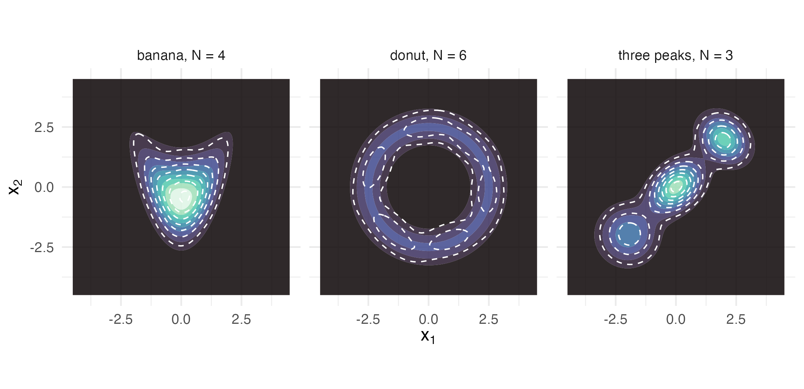
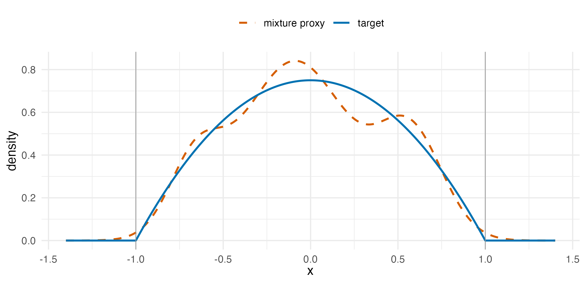

How well a mixture proxies four awkward shapes
Source:vignettes/density_shapes.Rmd
density_shapes.Rmd
has_ggplot2 <- requireNamespace("ggplot2", quietly = TRUE)The problem
The vignette Fitting a proxy to a density you cannot sample builds a proxy for a curved, banana-shaped distribution. The proxy is a mixture of a few normal distributions, and it is fitted from the density formula alone, with no sample. Many distributions encountered in practice are harder than the banana. Some have their highest values along a ring instead of at a single point. Some have several separate peaks. Some are exactly zero outside a fixed range, while a normal distribution is positive everywhere.
Two questions follow. How close can a mixture of normal distributions get to each of these shapes? How can you tell when a fit should not be used at all? This vignette fits a proxy to four awkward shapes, measures each fit in two independent ways, and shows the package stopping with an error when a fit cannot be trusted.
Package capabilities
-
banana_target(),donut_target(),mixture_target()andepanechnikov_target()are four ready-made targets. The banana is a curved ridge. The donut is a ring. The mixture has three well-separated peaks. The Epanechnikov density is shaped like an upside-down parabola and is exactly zero outside the interval from -1 to 1. -
fit_proxymix(regime = "kld")fits a proxy from the density formula, as in Fitting a proxy to a density you cannot sample. -
proposal_mvt()sets up the broad Student-t distribution from which the fit draws its trial points. The package calls this distribution the proposal. - The support of a distribution is the range of values where its
density is above zero. When a target declares its support, the fit uses
proposal_uniform()instead of a Student-t. This spreads the trial points evenly over the support. - Every fit reports
validation_kld, the Kullback-Leibler (KL) divergence between the target and the proxy measured on a fresh set of trial points that the fit never used. It comes with a standard error, stored asvalidation_mc_se. -
hellinger_mc()gives a second measure of the distance between the two densities, the squared Hellinger distance. It lies between 0 (identical) and 1 (no overlap) and also comes with a standard error. -
fit_kld_em()is the function thatfit_proxymix(regime = "kld")calls. Withon_low_ess = "abort", it stops with an error instead of returning a fit whose weights have collapsed onto a few trial points.
Addressing the problem
Fit the three shapes that cover the whole plane
The banana, the donut and the three peaks are positive everywhere in the plane. Each gets a Student-t distribution wide enough to cover it, and a number of components chosen for its shape: four along the banana, six around the ring, and three for the three peaks.
fit_b <- fit_proxymix(banana_target(), N = 4L, regime = "kld",
proposal = proposal_mvt(n_dim = 2L,
sigma = 4 * diag(2),
df = 5),
is_size = 3000L, max_iter = 50L, seed = 1L)
fit_d <- fit_proxymix(donut_target(), N = 6L, regime = "kld",
proposal = proposal_mvt(n_dim = 2L,
sigma = 9 * diag(2),
df = 5),
is_size = 3500L, max_iter = 60L, seed = 1L)
fit_m <- fit_proxymix(mixture_target(), N = 3L, regime = "kld",
proposal = proposal_mvt(n_dim = 2L,
sigma = 6 * diag(2),
df = 5),
is_size = 3000L, max_iter = 50L, seed = 1L)Compare each proxy with its target
shape_panel <- function(target, fit, label, lim) {
gx <- seq(-lim, lim, length.out = 110L)
base <- expand.grid(x1 = gx, x2 = gx)
gm <- as.matrix(base)
data.frame(
x1 = base$x1, x2 = base$x2,
target = exp(target@log_density(gm)),
proxy = dgmm(gm, fit),
shape = label,
stringsAsFactors = FALSE
)
}
overlay_df <- rbind(
shape_panel(banana_target(), fit_b, "banana, N = 4", 4.5),
shape_panel(donut_target(), fit_d, "donut, N = 6", 4.5),
shape_panel(mixture_target(), fit_m, "three peaks, N = 3", 4.5)
)
overlay_df$shape <- factor(overlay_df$shape,
levels = unique(overlay_df$shape))
ggplot2::ggplot(overlay_df, ggplot2::aes(x1, x2)) +
ggplot2::geom_contour_filled(ggplot2::aes(z = target), bins = 10L,
alpha = 0.85) +
ggplot2::geom_contour(ggplot2::aes(z = proxy), colour = "white",
linetype = "dashed", linewidth = 0.4, bins = 8L) +
ggplot2::scale_fill_viridis_d(option = "mako", guide = "none") +
ggplot2::facet_wrap(~ shape) +
ggplot2::coord_equal() +
ggplot2::labs(x = expression(x[1]), y = expression(x[2])) +
ggplot2::theme_minimal(base_size = 11)
Each target (filled contours) with its fitted proxy overlaid as dashed contours. The proxies for the banana and the three peaks lie close to their targets. The donut’s proxy is a ring of six ellipses, and its dashed contours break into separate lobes where neighbouring ellipses meet.
Measure each fit in two ways
The held-out KL divergence is computed from random trial points, so it carries random error. In one or two variables, the same divergence can also be computed without any random draws. The plane is covered with a fine grid of points, and the KL formula is added up over the grid. This sum uses only the two density formulas, not the draws the fit was built on.
The grid must be wide enough to hold nearly all of the target’s probability. The banana’s two arms reach far upwards, so its grid runs from -12 to 12 in each direction. The code below also prints the share of each target’s probability that falls on its grid, to six decimal places.
grid_points <- function(lim, step = 0.04) {
gx <- seq(-lim, lim, by = step)
list(x = as.matrix(expand.grid(x1 = gx, x2 = gx)), cell = step^2)
}
grid_mass <- function(target, lim) {
g <- grid_points(lim)
sum(exp(target@log_density(g$x))) * g$cell
}
kl_grid <- function(target, fit, lim) {
g <- grid_points(lim)
log_f <- target@log_density(g$x)
log_g <- dgmm(g$x, fit, log = TRUE)
dens_f <- exp(log_f)
ok <- is.finite(log_f) & is.finite(log_g) & dens_f > 1e-300
sum(dens_f[ok] * (log_f[ok] - log_g[ok])) * g$cell
}
grid_lim <- c(banana = 12, donut = 7, mixture = 8)
format(round(c(
banana = grid_mass(banana_target(), grid_lim[["banana"]]),
donut = grid_mass(donut_target(), grid_lim[["donut"]]),
mixture = grid_mass(mixture_target(), grid_lim[["mixture"]])
), 6L), nsmall = 6L)
#> banana donut mixture
#> "0.999999" "1.000000" "1.000000"
kl_quad <- c(
banana = kl_grid(banana_target(), fit_b, grid_lim[["banana"]]),
donut = kl_grid(donut_target(), fit_d, grid_lim[["donut"]]),
mixture = kl_grid(mixture_target(), fit_m, grid_lim[["mixture"]])
)A narrower grid for the banana, from -6 to 6, misses 0.05 per cent of its probability. That small share lies in the far tails, where the proxy fits worst. On the narrower grid the banana’s KL divergence comes out at 0.0079 instead of 0.0101.
| Shape | Components | Trial points | Effective sample size | KL, held-out | KL SE | KL, grid | Squared Hellinger | Hellinger SE |
|---|---|---|---|---|---|---|---|---|
| banana | 4 | 3000 | 1234 | 0.0093 | 0.0009 | 0.0101 | 0.0039 | 0.0014 |
| donut | 6 | 3500 | 1035 | 0.0219 | 0.0021 | 0.0189 | 0.0060 | 0.0021 |
| three peaks | 3 | 3000 | 758 | 0.0119 | 0.0017 | 0.0092 | 0.0055 | 0.0015 |
Give the ring more components and more trial points
A mixture of a few ellipses cannot match a smooth ring exactly. To see how far more components lower the remaining divergence, the donut is refitted with different numbers of components. Each count is fitted twice, once with 3,500 trial points and once with 20,000.
donut_n <- c(3L, 4L, 6L, 10L)
donut_draws <- c(3500L, 20000L)
donut_kl <- sapply(donut_draws, function(m) {
vapply(donut_n, function(k) {
f <- fit_proxymix(donut_target(), N = k, regime = "kld",
proposal = proposal_mvt(n_dim = 2L,
sigma = 9 * diag(2),
df = 5),
is_size = m, max_iter = 60L, seed = 1L)
kl_grid(donut_target(), f, grid_lim[["donut"]])
}, numeric(1L))
})| Components | KL, 3,500 trial points | KL, 20,000 trial points |
|---|---|---|
| 3 | 0.1976 | 0.1954 |
| 4 | 0.0839 | 0.0773 |
| 6 | 0.0189 | 0.0116 |
| 10 | 0.0169 | 0.0023 |
A density with hard edges
The Epanechnikov density, for between -1 and 1, is exactly zero outside that interval. Its log-density is minus infinity there. A Student-t proposal places some trial points outside the interval. Those points get zero weight and are wasted, and the fit gives a warning when more than 5 per cent of the points are lost this way. With a standard Student-t on five degrees of freedom, about a third of the points fall outside. The target declares its support, so the fit switches to a uniform proposal over the interval and prints a message saying so.
epan <- epanechnikov_target(n_dim = 1L)
epan
#> <gmm_target>: "epanechnikov" in p = 1 dimensions
#> log_density : supplied
#> samples : <absent>
#> normalised : TRUE
#> log Z(f) : 0
#> support : [-1, 1]
fit_e <- fit_proxymix(epan, N = 3L, regime = "kld",
is_size = 4000L, max_iter = 300L, seed = 1L)
#> Auto-selected a support-matched proposal ("is_uniform[support-matched]") for
#> the declared target support.
#> ℹ Pass an explicit `proposal` to override.
c(proposal = fit_e@diagnostics$proposal_name,
support_fraction = fit_e@diagnostics$support_fraction,
iterations = length(kld_trace(fit_e)),
converged = gmm_fit_quality(fit_e)$converged)
#> proposal support_fraction
#> "is_uniform[support-matched]" "1"
#> iterations converged
#> "241" "TRUE"The support_fraction is the share of trial points that
fell inside the support.
epan_x <- seq(-1.4, 1.4, length.out = 400L)
epan_df <- rbind(
data.frame(x = epan_x, density = exp(epan@log_density(
matrix(epan_x, ncol = 1L))), series = "target", stringsAsFactors = FALSE),
data.frame(x = epan_x, density = dgmm(matrix(epan_x, ncol = 1L), fit_e),
series = "mixture proxy", stringsAsFactors = FALSE)
)
## probability the proxy places outside [-1, 1]
leak_x <- seq(-6, 6, by = 0.001)
leak <- sum(dgmm(matrix(leak_x, ncol = 1L), fit_e)[abs(leak_x) > 1]) * 0.001
ggplot2::ggplot(epan_df, ggplot2::aes(x, density, colour = series,
linetype = series)) +
ggplot2::geom_line(linewidth = 0.8) +
ggplot2::geom_vline(xintercept = c(-1, 1), colour = "grey60",
linewidth = 0.3) +
ggplot2::scale_colour_manual(
name = NULL, values = c("target" = "#0072B2",
"mixture proxy" = "#D55E00")
) +
ggplot2::scale_linetype_manual(
name = NULL, values = c("target" = "solid", "mixture proxy" = "dashed")
) +
ggplot2::labs(x = expression(x), y = "density") +
ggplot2::theme_minimal(base_size = 11) +
ggplot2::theme(legend.position = "top")
The Epanechnikov target and its three-component proxy. The proxy follows the parabola across the interval with small ripples, and places 0.52 per cent of its probability outside the interval, beyond the grey lines at -1 and 1.
When the trial points miss the target
Every number above depends on the trial points landing where the
target has its probability. If they do not, the fitting steps still
return a mixture, but that mixture carries no information about the
target. The call below draws its trial points around the point (25, 25),
far from all three peaks. With on_low_ess = "abort", the
fit stops with an error instead of returning. The error message uses the
package’s own terms. “IS draws” are the trial points, IS standing for
importance sampling, the name of this weighting method. The option
adapt = "pmc" moves the proposal towards the target between
rounds.
bad <- tryCatch(
fit_kld_em(
mixture_target(), N = 3L,
proposal = proposal_mvn(n_dim = 2L, mean = c(25, 25), cov = diag(2)),
is_size = 2000L, max_iter = 10L, seed = 1L,
min_ess = 50, on_low_ess = "abort"
),
error = function(e) e
)
class(bad)[1L]
#> [1] "proxymix_degenerate_fit"
cat(conditionMessage(bad))
#> Effective sample size is low: ESS = 1 out of 2000; the fit is flagged as
#> degenerate.
#> ℹ Consider a heavier-tailed proposal, more IS draws, or `adapt = "pmc"`.Interpretation
The banana and the three peaks are fitted closely. On the grid, the KL divergence is 0.0101 for the banana’s proxy and 0.0092 for the proxy of the three peaks. In these two fits, the 3,000 trial points were worth 1,234 and 758 equally weighted points respectively. The donut’s proxy is further off, at 0.0189, about 1.9 times the banana’s.
The ring is harder, but it is not out of reach. With 3,500 trial points, going from 3 to 6 components lowers the donut’s divergence from 0.1976 to 0.0189, and 10 components lower it only to 0.0169. With 20,000 trial points, 10 components reach 0.0023. Over the counts tried here, the divergence kept falling as components and trial points were added, and placing more components well took more trial points. This agrees with a general fact: a mixture of enough normal distributions can come as close as needed to any smooth density.
The grid and the held-out estimates agree. Across the three shapes, the held-out values lie within 1.6 standard errors of the grid values. Their standard errors run from 0.0009 to 0.0021. The held-out values separate the donut from the other two shapes by at least 3.7 standard errors of the difference, but the banana and the three peaks differ by only 1.3. The squared Hellinger distances are each at least 2.7 standard errors above zero. The largest difference between two shapes, 0.0021, is smaller than its standard error of 0.0025, so the Hellinger distances do not rank the fits.
The Epanechnikov density has hard edges, which a mixture of normal distributions can only approach. Every trial point fell inside the support. The fit settled after 241 rounds, against at most 46 for the other three shapes. The held-out KL divergence is 0.014, with a standard error of 0.001. A normal distribution is positive everywhere, so the proxy always puts some probability outside the interval, here 0.52 per cent.
When the trial points missed the target, no fit was returned. The
error has class proxymix_degenerate_fit. Almost all of the weight sat on
a single trial point, so the weighted points carried no usable
information. Without the check, the call would have returned a mixture
that looked ordinary when printed. The default setting,
on_low_ess = "warn", gives a warning instead of an error
and returns the fit.
Limitations
All the measurements here are estimates. The held-out KL divergence and the squared Hellinger distance come from random draws. The standard errors of the Hellinger distances are as large as the differences between the shapes. The grid sum has no random error, and this vignette uses it in one and two variables. The number of grid points grows very fast with the number of variables, so the grid sum is not practical beyond two or three.
The number of components was set by hand for each shape. Choosing it is a separate problem, and the donut runs above only touch on it.
A small divergence shows that the proxy is close to the target overall. It does not show that the proxy is good enough for a particular use. Probabilities of rare events, which depend on the tails, are more sensitive to a poor fit than the mean or the bulk of the distribution.
Further reading
Fitting a proxy to a density you cannot sample is the shorter introduction to the fitting method used here, and explains the fit certificate in full.
Choosing between the three fitting regimes explains why only this fitting method applies when a target has a formula and no sample.
Reading the entropy of a fitted mixture returns to the question of how many components to use.
The closed-form operator calculus on a mixture shows the exact operations that a fitted proxy makes possible.
The extended
version of this article compares these fits with Stan’s sampler
followed by mclust, and the results there are mixed:
proxymix is closer on the ring, about level on the banana, and further
off on the three peaks and the Epanechnikov density.
References
Hoek, J. van der and Elliott, R. J. (2024). Mixtures of multivariate Gaussians. Stochastic Analysis and Applications. https://doi.org/10.1080/07362994.2024.2372605.
Reproduce
Every fit and every Hellinger estimate is seeded with
seed = 1L. The grid sums involve no random draws.
Re-running this vignette therefore reproduces the same numbers.
#> R version 4.6.1 (2026-06-24)
#> Platform: aarch64-apple-darwin23
#> Running under: macOS Tahoe 26.6.2
#>
#> Matrix products: default
#> BLAS: /Library/Frameworks/R.framework/Versions/4.6/Resources/lib/libRblas.0.dylib
#> LAPACK: /Library/Frameworks/R.framework/Versions/4.6/Resources/lib/libRlapack.dylib; LAPACK version 3.12.1
#>
#> locale:
#> [1] en_AU.UTF-8/en_AU.UTF-8/en_AU.UTF-8/C/en_AU.UTF-8/en_AU.UTF-8
#>
#> time zone: Australia/Adelaide
#> tzcode source: internal
#>
#> attached base packages:
#> [1] stats graphics grDevices utils datasets methods base
#>
#> other attached packages:
#> [1] proxymix_0.16.0
#>
#> loaded via a namespace (and not attached):
#> [1] mvnfast_0.2.8 gtable_0.3.6 jsonlite_2.0.0 dplyr_1.2.1
#> [5] compiler_4.6.1 Rcpp_1.1.2 tidyselect_1.2.1 dichromat_2.0-1
#> [9] jquerylib_0.1.4 systemfonts_1.3.2 scales_1.4.0 textshaping_1.0.5
#> [13] yaml_2.3.12 fastmap_1.2.0 ggplot2_4.0.3 R6_2.6.1
#> [17] labeling_0.4.3 generics_0.1.4 isoband_0.3.0 knitr_1.51
#> [21] htmlwidgets_1.6.4 tibble_3.3.1 desc_1.4.3 bslib_0.12.0
#> [25] pillar_1.11.1 RColorBrewer_1.1-3 rlang_1.3.0 cachem_1.1.0
#> [29] xfun_0.60 fs_2.1.0 sass_0.4.10 S7_0.2.2
#> [33] otel_0.2.0 viridisLite_0.4.3 cli_3.6.6 pkgdown_2.2.1
#> [37] withr_3.0.3 magrittr_2.0.5 digest_0.6.39 grid_4.6.1
#> [41] lifecycle_1.0.5 vctrs_0.7.3 evaluate_1.0.5 glue_1.8.1
#> [45] farver_2.1.2 ragg_1.5.2 rmarkdown_2.32 tools_4.6.1
#> [49] pkgconfig_2.0.3 htmltools_0.5.9